Query editor #
The query editor offers a full environment to write and execute SQL statements. You can access all running clusters and their configured catalogs.
The query editor is the default landing page when you sign in to your Starburst Galaxy account. Access the query editor at any time by clicking Query editor from the Query option of the navigation menu.
As an alternative, select Query from the options menu in the list of clusters.
Cluster explorer pane #
Use the cluster explorer pane on the left to explore the available clusters and their connected data sources.
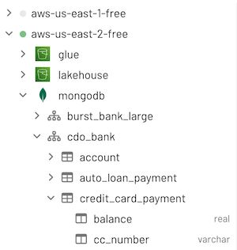
The cluster explorer pane shows an expandable, hierarchical diagram with the following symbols:
| clusters | cloud symbol |
| catalogs | disks symbol |
| schemas | hub symbol |
| tables | table symbol |
| views | eye symbol |
| columns | two-column table symbol |
To expand an element, click its > expanded arrow. To collapse an element, click its v collapsed arrow.
Click a cluster’s name to collapse all catalogs under it. Similarly, click a catalog to collapse all schemas under it, and click a schema to collapse its table list.
Quick info dialogs #
Click or hold the pointer over the name of a cluster in the cluster explorer to display the information dialog that shows the status, size, and region for the selected cluster. For example:
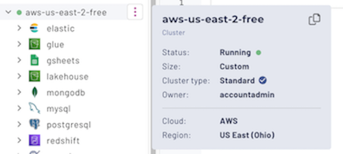
Click or hold the pointer over the name of a table in the cluster explorer to show the full path of the table including cluster name. For example:

Pop-up vertical ellipsis menus #
The cluster explorer displays a vertical ellipsis menu ( ) on the right of an object’s name when you select or hold the pointer over its name. The menu options apply only to the current object. The following example shows the menu for a table:
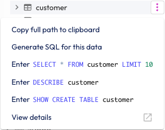
The following table shows the menu options provided by the vertical ellipsis menus for the cluster explorer objects.
catalog.schema.tablename
As shown in the following table, when the cluster explorer menu options return a path, they wrap each path element in quotes. This takes into account possible spaces and special characters in those element names that may be supported by the current catalog.
For example: “catalog”.”schema”.”tablename”
| Object | menu options |
|---|---|
| Cluster | |
| Catalog |
|
| Schema |
|
| Table |
|
| View | Same options as for a table, with the word view substituted. |
| Column |
|
Examine table parameters #
Use the SHOW CREATE TABLE statement to examine the structure of a table and
reveal its creation parameters. This is especially useful for tables in object
storage, where you may need to see a
table’s type and format.
The vertical ellipsis ( ) menu for tables includes the SHOW CREATE TABLE statement for the current table. When run, the result appears in the results pane:
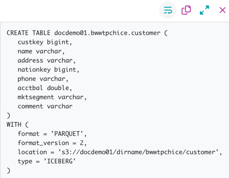
In the vertical ellipsis menu for a view or
materialized view, invoke the SHOW CREATE VIEW statement. As with tables,
click the long line in the results pane to open a dialog that shows the CREATE
VIEW parameters for the current view. For example:
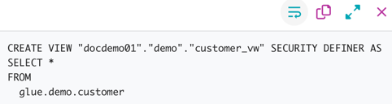
Run schema discovery #
Use the Run discovery option to analyze a root object in an object storage
location, and return the structure of any tables found.
The vertical ellipsis ( ) menu for
catalogs includes the Run discovery option. When run, a dialog
appears and prompts for the URI for the root object store to run schema
discovery on. For example:
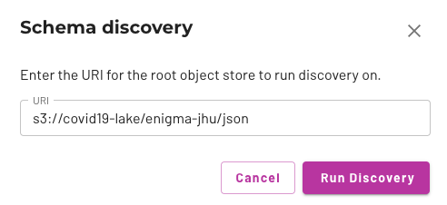
Click Run discovery to open a dialog that contains the schema discovery
results in the form of CREATE SCHEMA and USE commands, followed by one
or more CREATE TABLE commands. For example:
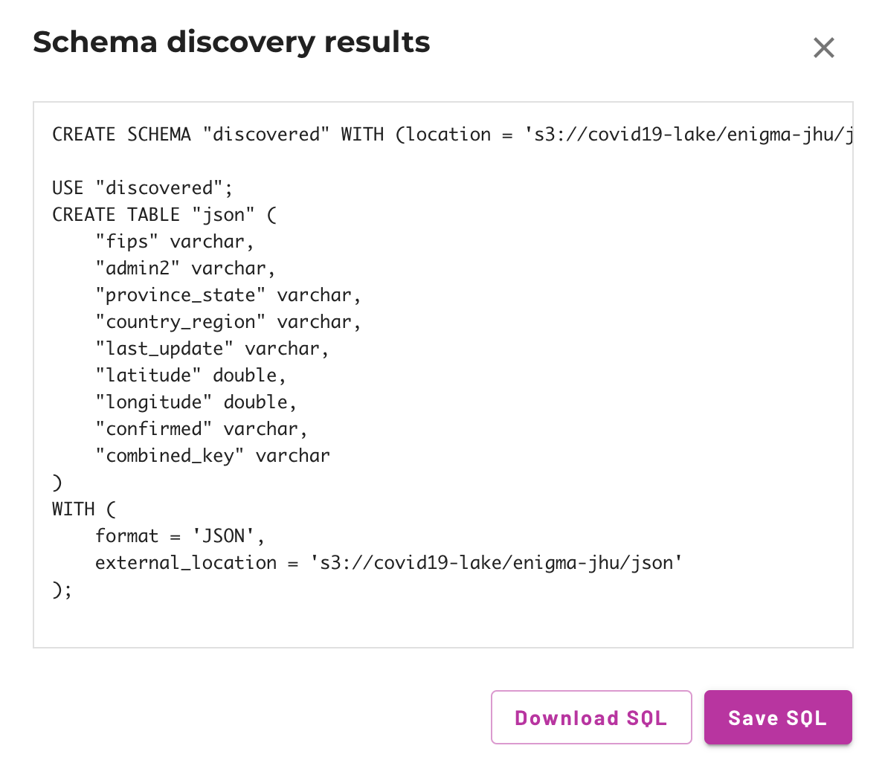
The Download SQL option downloads the results as a plain text file, or you
can use Save SQL to insert the results directly into a new tab of the query
editor for further editing.
Editor pane #
Use the current tab in the editor pane to enter, edit, then execute one or more SQL queries. You can overwrite the contents of the current tab or click the button at the end of the tab row to open a new tab to start fresh.
Tab management #
You can manage your queries in separate editor tabs. Your queries are automatically stored as Saved queries.
Organize your queries into separate tabs. For example, with a long-running query active in one tab, use the button in the query editor to open another tab for different queries.
The default name for newly created tabs is the date and time of creation. Rename a tab by double-clicking the tab name.
By default, timestamped tab contents and tab names persist across login sessions for until the tab is closed. After the tab is closed, timestamped editor tabs are still available in the Recent list in the Saved queries pane for seven days. Named editor tabs are permanently stored in the My saved queries list until you delete that saved query.
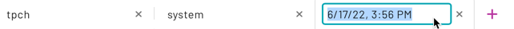
Auto-completion #
The query editor anticipates SQL commands and most function names as you type,
and presents a dialog that suggests several ways to complete the command or
function you started. Select an option and press the Tab key to accept one of
the options, or keep typing to close the dialog.

Run a SQL query #
Execute a query in one of three ways:
- Click the ▶ Run button
- Press Ctrl+Enter (⌘+Enter on Mac)
- Invoke the context menu and select Run query
If your Starburst Galaxy session has more than one cluster defined, you must specify which cluster to apply the Run operation to. The ▶ Run button does not become active until you select the active cluster using the location drop-down buttons.
Run options #
There are three variations of the Run button.
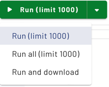
The last variation you used remains active for the current tab, with each tab maintaining separate history of the state of the Run button. Use the drop-down arrow in the current Run button to select among the Run options, which are:
-
▶ Run (limit 1000): This default option retrieves up to 1000 rows of the query’s result set and places it in the results pane. Result sets longer than 1000 rows are truncated as if
LIMIT 1000was appended to the query. You can use the Download link at the top of the results pane to download a CSV file of this truncated result set as long as it is still visible in the results pane. -
▶ Run all (limit 1000): This option applies when the current tab has more than one valid SQL statement, each terminated by a semicolon. In this case, this option runs all statements in order, top to bottom, as described in Run multiple statements. The same 1000 row limit applies to this option.
-
▶ Run and download: This option retrieves a query’s entire result set and streams it in CSV format to a file in the current user’s default downloads directory. Use this option when you expect a large result set from a query. The name of the results file is browser dependent. Chrome prompts for a filename; Firefox and Safari write to a file named
results.csv, appending a digit or a timestamp if the target filename exists. While the download proceeds, a few rows of sample results appear in the results pane.
Query selection #
There are two ways to specify which query to run, if you have multiple SQL statements in a tab.
-
Click to select: Click to place the cursor anywhere in a complete SQL statement that terminates with a semicolon, then invoke one of the Run methods.
-
Highlight to select: Highlight a complete SQL statement or valid portion of a statement, then invoke one of the Run methods. You can also highlight to select more than one complete SQL statement and run them all in sequence.
The click-to-select option is strict about requiring a terminating semicolon for statements. A statement with a missing semicolon prevents running that statement and statements below it in the same tab.
When you use a pop up vertical ellipsis menu to place a SQL statement on the canvas, the statement is highlighted. Highlight-to-select is more forgiving of semicolon placement.
When text is selected, the Run button options change into:
- ▶ Run selected (limit 1000)
- ▶ Run all selected (limit 1000)
- ▶ Run and download selected
Run multiple statements #
You can run more than one SQL statement in sequence in the following ways:
- Use highlight to select the statements of interest, followed by one of the Run options.
- Use the Run all (limit 1000) option to run all SQL statements in the current tab in sequence.
In either case, the statements are run in top down order, with the results of each statement showing in sequence in the results pane. A navigation sub-pane opens in the results pane to show the status of each selected query. Click to select a row in this sub-pane to show the corresponding results from each SQL statement.
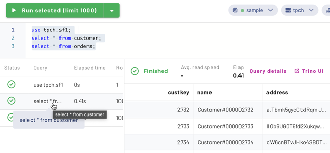
If you click Cancel while a multiple statement set is running, the cancellation applies to the currently running statement. The execution of all following statements in the set is stopped, with status showing Skipped.

Location drop-downs #
The right hand corner above the editor pane contains drop-down selectors that let you specify the default cluster, catalog, and schema for queries in the current editor tab. These settings persist for each tab separately, and are restored when you reopen a saved query.
If you have more than one cluster in your Starburst Galaxy account, you must specify the active cluster before the Run button becomes active. When you open a new tab, cluster selection is empty and a message reminds you to select a cluster before querying.
A green dot in the cluster drop-down means the cluster is currently running. Selecting a stopped cluster in the drop-down starts the cluster.
Making these UI selections for catalog and schema is analogous to entering the
USE command in a SQL client session. If you do specify an actual USE
catalog.schema statement as an editor command, the specified catalog and schema
display as current selections in these drop-downs. However, there is no support
for specifying a cluster with a USE command.
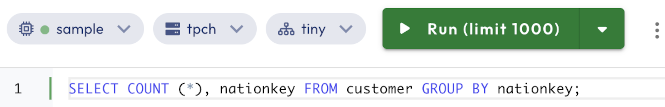
Editor pane vertical ellipsis menu #
To the right of the three location drop-downs is a vertical ellipsis ( ) menu button with the following options:
- Copy: to copy the current editor selection to the clipboard.
- Prettify and Command palette: as described next in Context menu.
Context menu #
The query editor canvas shows a context menu invoked in the standard ways: right-click on a right-hand configured mouse, double tap on a trackpad, and so on. The context menu provides:
- Run query: to execute the query that contains the cursor, or execute the fully selected query, or execute the set of fully selected queries.
- Change All Occurrences: to search and replace a string in a long query being edited.
- Cut, Copy, Paste: editing commands.
- Prettify: to format the selected query to add spaces, tabs, and newlines where needed.
-
Command palette: opens a dialog from which you can select editing commands to run at the current cursor location or run on the current editor selection. With the cursor in the editor pane, you can also press F1 to open the command palette. Press Esc to close the palette.
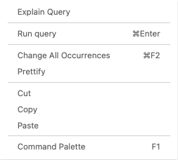
Results pane #
The results pane below the editor displays the query processing progress and results. Typically one or more rows and columns are returned by a query.
Select the border between the editor and results panes to drag the results pane up or down.
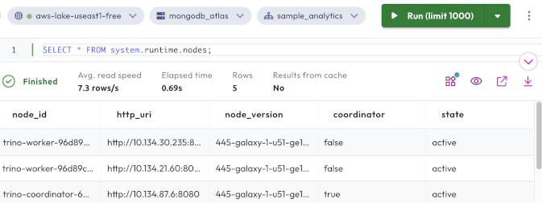
Above the results table on the left, the status bar displays current query processing statistics:
- Status: displays progress while the query is processed, and final status when complete.
- Avg. read speed: from all sources, in rows per second.
- Elapsed time: in seconds since query processing started.
- Rows: the number of rows returned.
While a query is running, a progress estimate for that query is shown:
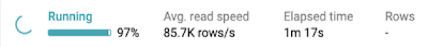
If your result set is very wide, or is greater than 1000 rows, it is truncated.
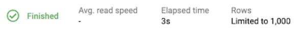
On the right are three active links:
- Query details: opens the details page for the most recently run query.
- Trino UI: opens the Trino web UI.
- Download: if results are shown from the last query, initiates download of those results as a CSV file. Results are not stored, and are only available until a new query is run or your page is closed or refreshed, whichever comes first.
Query status #
Some statuses are only visible when the query editor is running. Other query statuses are only visible in the query details page. The query editor statuses include:
- Cancelling: The status that displays after a user clicks the Cancel button. Only visible in the query editor.
- Failed: Query execution has failed.
- Finished: The query is finished executing and all output was consumed.
- Queued: The query is waiting for other queries to execute.
- Skipped: The query was run as part of a set of queries, but an earlier query in the set was cancelled.
- Running: The query is executing and has at least one running task.
- Starting server: The query processing is waiting for the cluster to complete starting from a suspended state.
Help menu #
The Help (?) menu includes the following convenience links for requesting assistance:
-
Chat with us: Opens a chat session with Starburst Galaxy Support.
-
Documentation: Opens the Starburst Galaxy documentation.
Is the information on this page helpful?
Yes
No
Is the information on this page helpful?
Yes
No